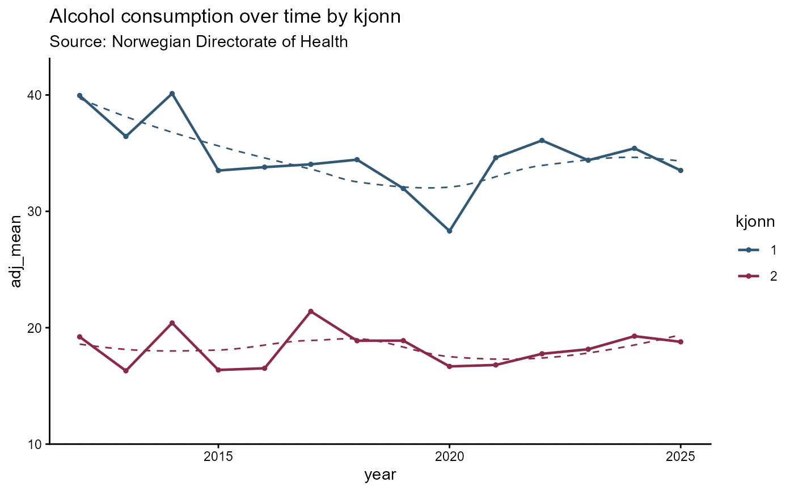

hd_geom_line() creates a line geometry layer that is added to an hd()
object via +. The layer records the geometry type and any geometry-specific arguments;
rendering only happens when the hd object is printed.
Arguments
- smooth
Logical. TRUE = spline curves, FALSE = straight segments. Both backends.
- dot_size
Numeric. Marker radius in pixels. Both backends.
- line_symbols
Character vector. Highcharter only. Per-group marker shapes: "circle", "square", "diamond", "triangle", "triangle-down".
- ...
Geometry-specific arguments forwarded to
hd_make().
Examples
# Single series - no group column
spec_line1 <- hd_spec(alco1,
x = "year",
y = "adj_mean"
)
opts_line <- hd_opts(
title = "Alcohol consumption over time",
subtitle = "Source: Norwegian Directorate of Health",
ylim = c(0, 50),
ylab = "Litres per capita"
)
# Straight segments
hd_make(spec_line1, "line", opts_line, smooth = FALSE)
# Composite example with multiple geoms and custom line symbols
hd(alco2, x = "year", y = "adj_mean", group = "kjonn", backend = "ggplot2") +
hd_geom_line(smooth = TRUE, dot_size = 3) +
hd_opts(title = "Alcohol consumption over time by kjonn",
subtitle = "Source: Norwegian Directorate of Health")
